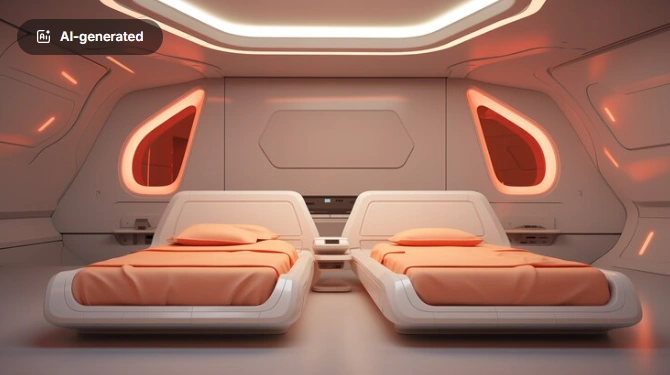
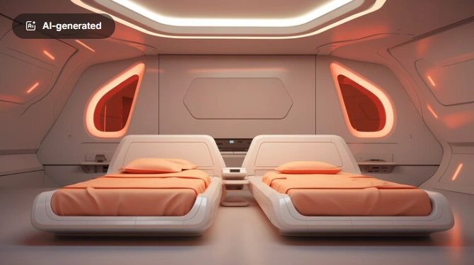
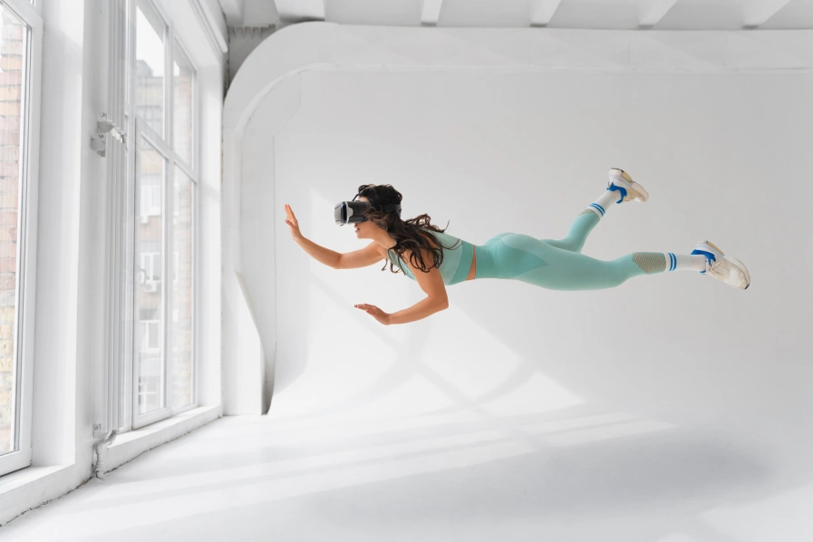
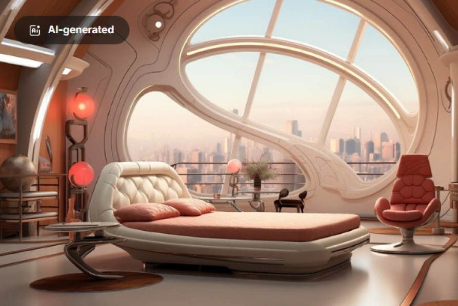

When the Milky Way is your midnight skyline....
When dining among the stars is your daily routine...
When your journey is measured in light-years, not miles..
LIVE IN LUXURY
 

Custom Pressurization
Make sure your unit feels however you want - custom pressurization is available is just the start of your living customization.
ALTITUDEClimate Control
Each unit comes equipped with its own climate-control settings. Access your climate controls with voice commands or with the included datapad.
 CLIMATE
CLIMATE
Gravity
Each unit comes equipped with its own customizable gravity generator. Whether you want your traversal within your unit to feel like Earth, your destination, space itself, or something in between, you may modify the gravity your unit at will.
 GravityAesthetic
Your unit can look however you want - from chique and modern to old and classic and everything in between. Pick your favorite colors and designs and we will make your dream a reality
 Aesthetic